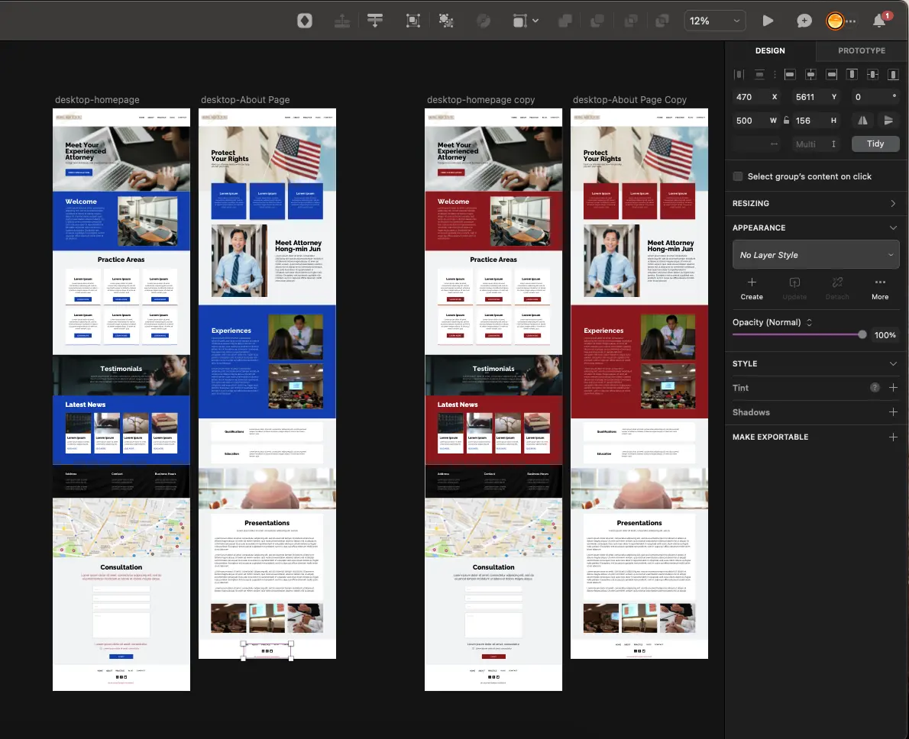
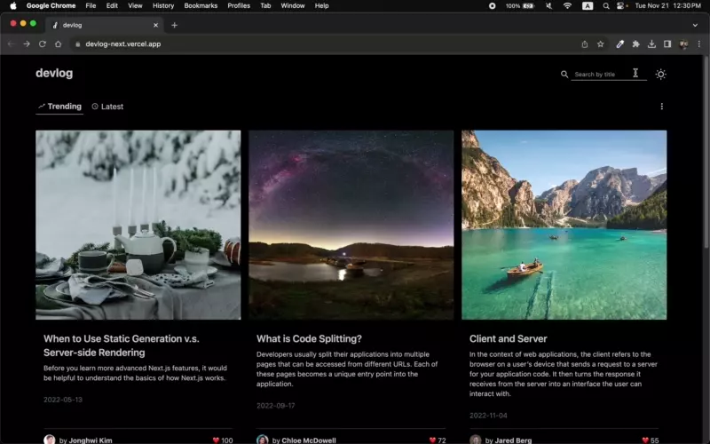
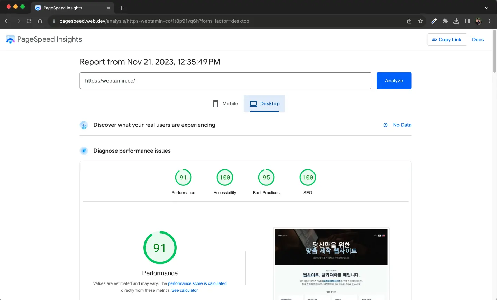

3 Reasons You Need To Create a Custom Website
10-07-2023
There are two ways to create a website. The first method is to
build a website with a web builder and a pre-made template. The
other method is to develop a custom website by coding. This
article will cover
three reasons to create a custom website.
By reading this article, You will understand the
limitations of most template-based websites.
You can see how custom websites can go beyond these limits. Let's
dive in.
1. Unique Branding
Brand means an impression of a company's products and services.
Branding refers to the overall process of creating a brand.
Branding aims to give consumers a distinctive recognition of the
company.
The primary purpose of the website is to maximize branding. All
website elements, including layout, logo, color, typography, and
images, should represent the company's unique brand. The website
made with a web builder is limited in design.
The template comes in a pre-made form of design parts. The range
of adjustable elements may vary depending on the template, but
most are constrained. Therefore,
implementing a design that fits your company's brand is
challenging.
On the other hand, custom websites have 100% control over their
design. All visual elements of the website can be applied as
desired. You can design the website to represent your brand
without any limitations.

The image above is a draft of our customer's website. We design
websites without online templates for unique branding. From the
hands of experienced designers, the optimal design for your brand
that considers aesthetics, usability, and brand image is born.
Therefore,
imprinting the brand on visitors is much more
advantageous
than doing so on a uniform template website.
2. No Restrictions
The template website is subject to functional restrictions.
Websites can only be
built within the scope of pre-made features.
There are often restrictions on integrating payment systems,
linking external business tools, search and filter functions, and
the ability to provide customized content to users. It may sound
vague, so I got the story below for you.
Here's a law firm website made by the web builder. It has a blog
section that has 100 articles in various categories, such as
inheritance law, immigration law, and divorce law. Visitor Paul is
curious about the U.S. immigration law. He'd like to read only
posts related to immigration laws out of 100 articles. However,
the blog page does not show anything to filter those. The only way
to navigate the page is to scroll it manually. He feels
uncomfortable and wants to look around other law firms' websites.
Later, he found a custom-made law firm website. This website also
has a blog inside. On the page, the inheritance law, immigration
law, and divorce law are separated by tabs. The sorting function
exists, allowing you to view posts in order of latest and
popularity. It has a function where you can search posts around
specific keywords. He is satisfied with the more convenient user
experience compared to the previous website.

Here's another example. The image above is a blog website, one of
Webtamin's projects. It shows a real-time filtering of blog posts
when typing search titles.
You can see how custom websites can
implement features aimed at visitors' needs
because there are no technical limitations to developing the
function.
Websites that meet the needs of visitors will have a positive
impact on the brand's impression. Brand recognition is the
starting point for creating product and service demand.
3. Faster Loading
When you visit the website, you may have clicked go back or closed
the window because of the long loading time. After three seconds
of loading, most visitors leave the site. A slow loading impacts
the user's experience significantly. Therefore, the difference
between 1 and 2 seconds of loading time is critical when creating
a website.
Template websites typically have slower loading times.
Some factors can slow down a website's loading, and the
template-based website is almost impossible to fix the problems.
These include;
First, an oversized image file. You need a blog thumbnail image of
400 x 300 pixels here. However, the original image you want to use
is 4000 x 3000 pixels in size. In this case, you should reduce the
loading speed by downsizing the image to match the thumbnail. This
is called image optimization; sometimes, the template website does
not support it. This causes the loading of unnecessarily large
size image files, which takes more time.
Next are JavaScript and CSS files. Don't be flustered by
unfamiliar terms. Think of it simply as a file related to the
appearance and behavior of the website. Templates often load these
files, even from unnecessary pages.
In addition, template websites are relatively slow to load due to
messy code, bloated third-party plug-ins, and excessive external
script file calls.
On the other hand, custom websites can optimize image files to the
correct size. You can develop related files to load only where
they are needed. You can reduce loading time by optimizing code.
You can have
the most control over all the technical aspects of loading
speed.

The image above results from the speed test on Webtamin's official
website. As a result of speed optimization, it shows a high score
in performance. A website that loads fast will increase visitors'
satisfaction. Visitors who are satisfied with the website have no
choice but to have a good impression of the brand.
So far, we've covered three reasons why you want to have custom
websites. The reasons are as follows.
- Unique Branding
- No Restrictions
- Faster Loading
Creating websites that
satisfy users is the starting point
for making a profit online. The template website has the advantage
of being relatively easy to make, having a low price, and having a
short development time. However, there are restrictions on
creating websites that fit the brand perfectly.
On the other hand, custom websites are customized for everything
in design, function, and performance. It's relatively expensive
and takes a long time to build, but it's optimized for
representing the brand's unique identity.
You can make a wise decision by knowing the difference between
template-based websites and custom websites.
Don't hesitate to contact us with questions or requests about the
website design.